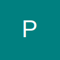

PWA Framework
Technologies: HTML5, CSS3 (Mobile-First, Flexbox/Grid). This project is the PWA structure itself, demonstrating responsive frontend fundamentals.
A showcase of creative computing and development work completed during my course.
Technologies: HTML5, CSS3 (Mobile-First, Flexbox/Grid). This project is the PWA structure itself, demonstrating responsive frontend fundamentals.
Watch a short demo video below. Use the controls to play or pause.